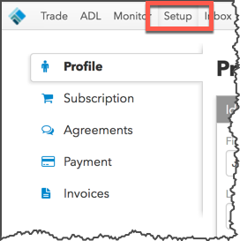
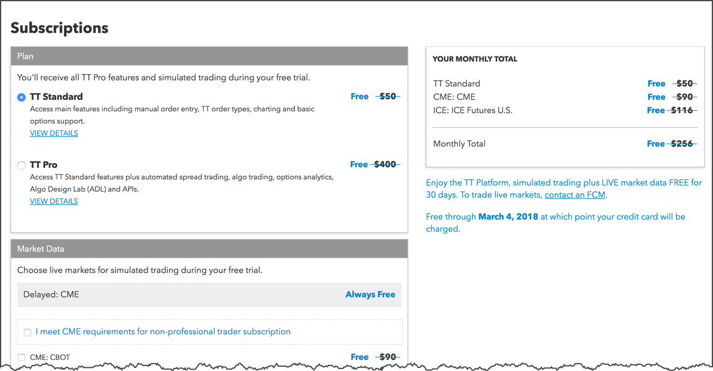
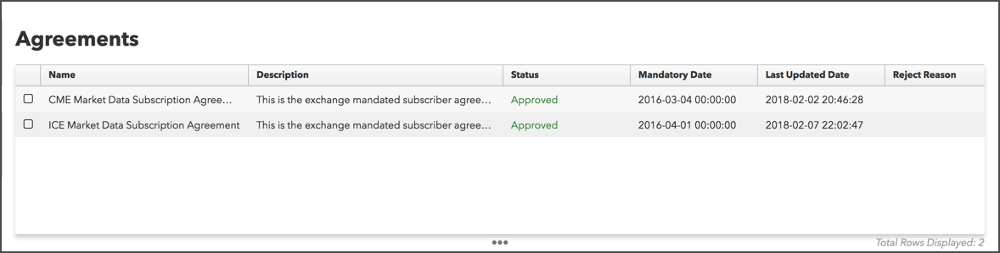
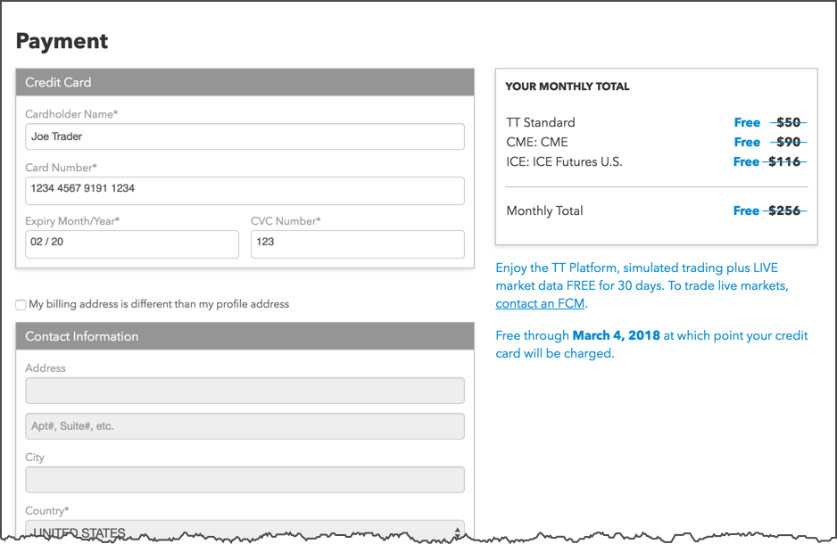

In order to access the TT platform, you have to create a TT account (TT ID). You can create a TT account and trade as a 30-day free trial user, a directly-billed user, or as a member of an FCM or trading firm. Each type of user can manage their TT account and account settings from within the Trade application using the TT menu bar.
If you are creating a TT account as a 30-day free trial or directly billed user, the following markets provide a trial trading period:
After you log in to TT as a trial or directly-billed user, you can click Setup in the TT menu bar to manage your account:

The following tabs are available in the left navigation panel:
On the Profile page you can update your TT username/alias and personal contact information. Also, if you choose the "Pay Now" option when signing up, you'll be directed to this page.
Use this page to change your TT plan selection and to add or remove markets that you want to trade.
To receive live market data in the Simulation environment, select each of the available markets in the Market Data section of the Subscriptions page. Otherwise, if you don't select a specific market, you'll have access to market data in the delayed environment.
If you meet CME or CFE non-professional requirements, you'll need to sign an agreement with those exchanges. You'll be able to receive live data, but will be billed professional rates until the exchange approves your status as a non-professional.

This page allows you to review and print market data agreements and other agreements that may be required by an exchange, such as CME or CFE non-professional status agreements. This page also includes the market data agreements you reviewed and accepted during the sign up process.

Use the Payment page to enter your credit card to become a paid user. To have access to TT as a paid user, no other TT or FCM involvement is needed other than entering your credit card. You can also use this page to modify your credit card and billing information after becoming a paid user.

As you are billed for market data or receive invoices from TT, you can review those invoices on this page.
As a trial user, directly-billed user, or member of a trading firm, you can click your account name in the TT menu bar to access your account settings.

The tabs on the TT account settings page allow you to modify your profile, configure account security options like two-factor authentication, and view your TT account history.
In this section, you can update your name, company, and email address, as well as review your customer service agreements.

You can choose whether to use added login protection from the Security section. You can enable two-step verification and change your password.

TT records all of the login attempts and account-related activity for your TT account. You can use the History section to review the information. If you see any suspicious activity, you should contact TT Support immediately.